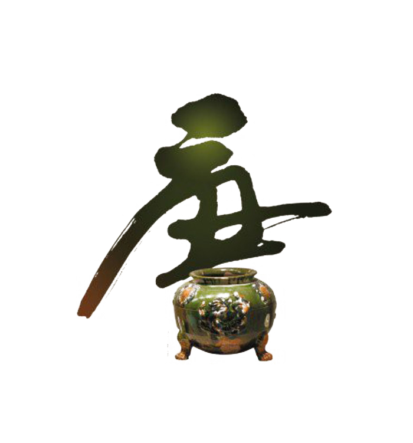
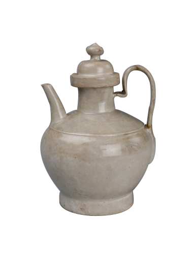
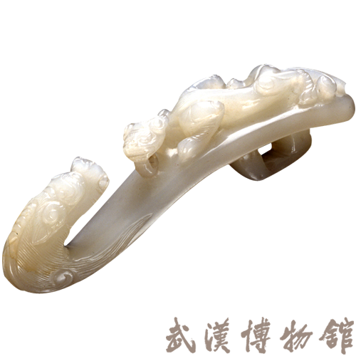
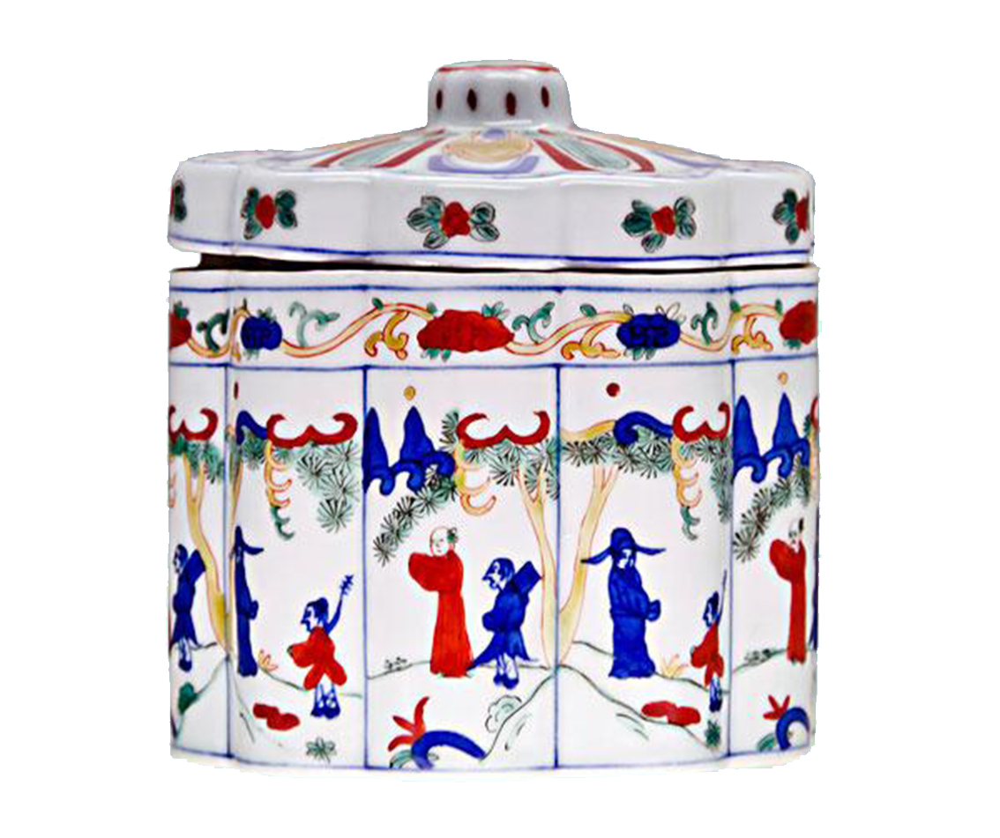
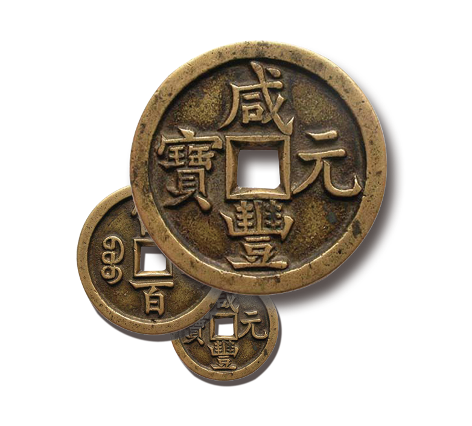
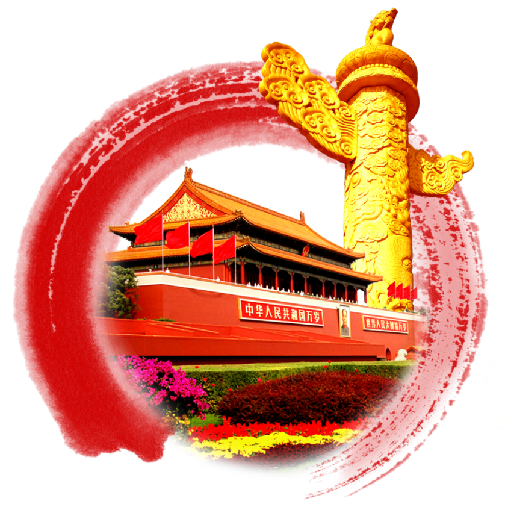

The name of West Lake Longjing tea began in the Song Dynasty, heard in the Yuan Dynasty, Yang Yu Ming, sheng in the Qing Dynasty. In the process of historical evolution of more than one thousand years, West Lake Longjing Tea began its glorious period from unknown to famous, from the domestic drink of ordinary people after dinner to the tribute of emperors and ministers, from the famous tea of the Chinese nation to the famous product of the world.

West Lake Longjing Tea has a long history, dating back to the Tang Dynasty of China. In the book of Tea, the world's first monograph on tea written by the famous tea sage Lu Yu, there are records of tea produced in Tianzhu and Lingyin temples in Hangzhou.

As early as in the Northern Song Dynasty, the Longjing tea area had initially taken shape. At that time, "Xianglin Tea" in Lingyin Xiazhuxianglin Cave, "Baiyun tea" in Upper Tianzhu Baiyun Peak and "Baoyun tea" in Geling Baoyun Mountain had been listed as tributes.

In yuan Dynasty, the quality of Longjing tea was further improved. Tea produced near longjing began to appear. Yu Bosheng, a tea lover, began to write a tea poem called "Wandering on Longjing". In the poem, he said, "Wandering on Longjing, the clouds and the air rise clear painting.

In the Ming Dynasty, West Lake Longjing Tea began to emerge, its reputation gradually spread far, began to go out of the temple, for ordinary people to drink. In the Jiajing period of the Ming Dynasty, Zhejiang Zhizhi recorded: "All kinds of tea in Hangzhou are not as good as those in Longjing, but before the rain, the fine buds take one flag and one gun, which are particularly precious.

Qing Dynasty scholar Hao Yi was unbribed by the name of tea, longjing of Zhejiang, Mustard of Jiangnan, Wuyi cloud of Fujian. Emperor Qianlong visited the south of the Yangtze River six times, and came to the Longjing tea district of West Lake four times to watch tea harvesting, taste tea and compose poems. Eighteen tea trees in front of hu Gong temple were also named "imperial Tea".

After the founding of New China, the state actively supported the development of Longjing tea, longjing tea was listed as a national diplomatic gift tea. Under the care of the government, the people in the tea area made longjing tea production step on the road of scientific and standardized development.